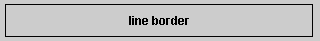
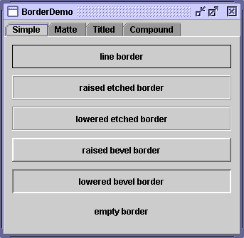
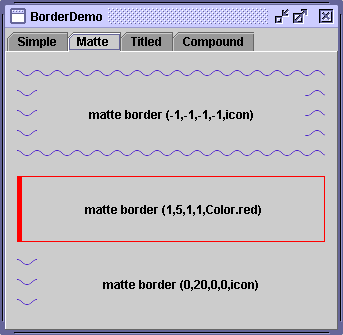
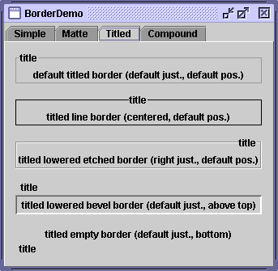
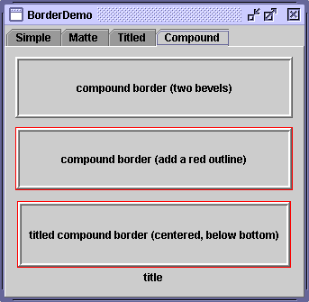

Feedback Form
|
|
Start of Tutorial > Start of Trail > Start of Lesson |
Search
Feedback Form |
EveryJComponentcan have one or more borders. Borders are incredibly useful objects that, while not themselves components, know how to draw the edges of Swing components. Borders are useful not only for drawing lines and fancy edges, but also for providing titles and empty space around components.
Note: Our examples set borders onJPanels,JLabels, and custom subclasses ofJComponent. Although technically you can set the border on any object that inherits fromJComponent, the look and feel implementation of many standard Swing components doesn't work well with user-set borders. In general, when you want to set a border on a standard Swing component other thanJPanelorJLabel, we recommend that you put the component in aJPaneland set the border on theJPanel.The GTK+ look and feel handles borders differently than other look and feels. Please refer to the 1.4.2 release notes
for details.
To put a border around a
JComponent, you use itssetBordermethod. You can use theBorderFactoryclass to create most of the borders that Swing provides. If you need a reference to a border — say, because you want to use it in multiple components — you can save it in a variable of type
Border
JPanel pane = new JPanel(); pane.setBorder(BorderFactory.createLineBorder(Color.black));Here's a picture of the container, which contains a label component. The black line drawn by the border marks the edge of the container.
 The rest of this page discusses the following topics:
The following pictures show an application calledBorderDemothat displays the borders Swing provides. We show the code for creating these borders a little later, in Using the Borders Provided by Swing.You can run BorderDemo using JavaTM Web Start. Or, to compile and run the example yourself, consult the example index.
 The next picture shows some matte borders. When creating a matte border, you specify how many pixels it occupies at the top, left, bottom, and right of a component. You then specify either a color or an icon for the matte border to draw. You need to be careful when choosing the icon and determining your component's size; otherwise, the icon might get chopped off or have mismatch at the component's corners. The next picture shows titled borders. Using a titled border, you can convert any border into one that displays a text description. If you don't specify a border, a look-and-feel-specific border is used. For example, the default titled border in the Java look and feel uses a gray line, and the default titled border in the Windows look and feel uses an etched border. By default, the title straddles the upper left of the border, as shown at the top of the following figure. The next picture shows compound borders. With compound borders, you can combine any two borders, which can themselves be compound borders.
The code that follows shows how to create and set the borders you saw in the preceding figures. You can find the program's code inBorderDemo.java.
As you probably noticed, the code uses the//Keep references to the next few borders, //for use in titles and compound borders. Border blackline, raisedetched, loweredetched, raisedbevel, loweredbevel, empty; blackline = BorderFactory.createLineBorder(Color.black); raisedetched = BorderFactory.createEtchedBorder(EtchedBorder.RAISED); loweredetched = BorderFactory.createEtchedBorder(EtchedBorder.LOWERED); raisedbevel = BorderFactory.createRaisedBevelBorder(); loweredbevel = BorderFactory.createLoweredBevelBorder(); empty = BorderFactory.createEmptyBorder(); //Simple borders jComp1.setBorder(blackline); jComp2.setBorder(raisedbevel); jComp3.setBorder(loweredbevel); jComp4.setBorder(empty); //Matte borders ImageIcon icon = createImageIcon("images/wavy.gif", "wavy-line border icon"); //20x22 jComp5.setBorder(BorderFactory.createMatteBorder( -1, -1, -1, -1, icon)); jComp6.setBorder(BorderFactory.createMatteBorder( 1, 5, 1, 1, Color.red)); jComp7.setBorder(BorderFactory.createMatteBorder( 0, 20, 0, 0, icon)); //Titled borders TitledBorder title; title = BorderFactory.createTitledBorder("title"); jComp8.setBorder(title); title = BorderFactory.createTitledBorder( blackline, "title"); title.setTitleJustification(TitledBorder.CENTER); jComp9.setBorder(title); title = BorderFactory.createTitledBorder( loweredetched, "title"); title.setTitleJustification(TitledBorder.RIGHT); jComp10.setBorder(title); title = BorderFactory.createTitledBorder( loweredbevel, "title"); title.setTitlePosition(TitledBorder.ABOVE_TOP); jComp11.setBorder(title); title = BorderFactory.createTitledBorder( empty, "title"); title.setTitlePosition(TitledBorder.BOTTOM); jComp12.setBorder(title); //Compound borders Border compound; Border redline = BorderFactory.createLineBorder(Color.red); //This creates a nice frame. compound = BorderFactory.createCompoundBorder( raisedbevel, loweredbevel); jComp13.setBorder(compound); //Add a red outline to the frame. compound = BorderFactory.createCompoundBorder( redline, compound); jComp14.setBorder(compound); //Add a title to the red-outlined frame. compound = BorderFactory.createTitledBorder( compound, "title", TitledBorder.CENTER, TitledBorder.BELOW_BOTTOM); jComp15.setBorder(compound);BorderFactoryclass to create each border. TheBorderFactoryclass, which is in thejavax.swingpackage, returns objects that implement theBorderThe
Borderinterface, as well as its Swing-provided implementations, is in thejavax.swing.borderBordertype.
IfBorderFactorydoesn't offer you enough control over a border's form, then you might need to directly use the API in the border package — or even define your own border. In addition to containing theBorderinterface, the border package contains the classes that implement the borders you've already seen:LineBorderEtchedBorderBevelBorderEmptyBorderMatteBorderTitledBorderCompoundBorderSoftBevelBorderBevelBorder, but with softer edges.If none of the Swing borders is suitable, you can implement your own border. Generally, you do this by creating a subclass of the
AbstractBorderFor examples of implementing borders, see the source code for the classes in the
paintBorder, which contains the drawing code that aJComponentexecutes to draw the border.getBorderInsets, which specifies the amount of space the border needs to draw itself.javax.swing.borderpackage.
The following tables list the commonly used border methods. The API for using borders falls into two categories:
Creating a Border with BorderFactory Method Purpose Border createLineBorder(Color)
Border createLineBorder(Color, int)Create a line border. The first argument is a java.awt.Colorobject that specifies the color of the line. The optional second argument specifies the width in pixels of the line.Border createEtchedBorder()
Border createEtchedBorder(Color, Color)
Border createEtchedBorder(int)
Border createEtchedBorder(int, Color, Color)Create an etched border. The optional Colorarguments specify the highlight and shadow colors to be used. In release 1.3, methods withintarguments were added that allow the border methods to be specified as eitherEtchedBorder.RAISEDorEtchedBorder.LOWERED. The methods without theintarguments create a lowered etched border.Border createLoweredBevelBorder()Create a border that gives the illusion of the component being lower than the surrounding area. Border createRaisedBevelBorder()Create a border that gives the illusion of the component being higher than the surrounding area.
Border createBevelBorder(int, Color, Color)
Border createBevelBorder(int, Color, Color, Color, Color)Create a raised or lowered beveled border, specifying the colors to use. The integer argument can be either BevelBorder.RAISEDorBevelBorder.LOWERED. With the three-argument constructor, you specify the highlight and shadow colors. With the five-argument constructor, you specify the outer highlight, inner highlight, outer shadow, and inner shadow colors, in that order.Border createEmptyBorder()
Border createEmptyBorder(int, int, int, int)Create an invisible border. If you specify no arguments, then the border takes no space, which is useful when creating a titled border with no visible boundary. The optional arguments specify the number of pixels that the border occupies at the top, left, bottom, and right (in that order) of whatever component uses it. This method is useful for for putting empty space around your components. MatteBorder createMatteBorder(int, int, int, int, Color)
MatteBorder createMatteBorder(int, int, int, int, Icon)Create a matte border. The integer arguments specify the number of pixels that the border occupies at the top, left, bottom, and right (in that order) of whatever component uses it. The color argument specifies the color which with the border should fill its area. The icon argument specifies the icon which with the border should tile its area. TitledBorder createTitledBorder(String)
TitledBorder createTitledBorder(Border)
TitledBorder createTitledBorder(Border, String)
TitledBorder createTitledBorder(Border, String, int, int)
TitledBorder createTitledBorder(Border, String, int, int, Font)
TitledBorder createTitledBorder(Border, String, int, int, Font, Color)Create a titled border. The string argument specifies the title to be displayed. The optional font and color arguments specify the font and color to be used for the title's text. The border argument specifies the border that should be displayed along with the title. If no border is specified, then a look-and-feel-specific default border is used. By default, the title straddles the top of its companion border and is left-justified. The optional integer arguments specify the title's position and justification, in that order.
TitledBorderABOVE_TOP,TOP(the default),BELOW_TOP,ABOVE_BOTTOM,BOTTOM, andBELOW_BOTTOM. You can specify the justification asLEADING(the default),CENTER, orTRAILING. In locales with Western alphabetsLEADINGis equivalent toLEFTandTRAILINGis equivalent toRIGHT.
CompoundBorder createCompoundBorder(Border, Border)Combine two borders into one. The first argument specifies the outer border; the second, the inner border.
Setting or Getting a Component's Border Method Purpose void setBorder(Border)
Border getBorder()Set or get the border of the receiving JComponent.void setBorderPainted(boolean)
boolean isBorderPainted()
(inAbstractButton,JMenuBar,JPopupMenu,JProgressBar, andJToolBar)Set or get whether the border of the component should be displayed.
Many examples in this lesson use borders. The following table lists a few interesting cases.
Example Where Described Notes BorderDemoThis section Shows an example of each type of border that BorderFactorycan create. Also uses an empty border to add breathing space between each pane and its contents.BoxAlignmentDemoHow to Use BoxLayout Uses titled borders. BoxLayoutDemoHow to Use BoxLayout Uses a red line to show where the edge of a container is, so that you can see how the extra space in a box layout is distributed. ComboBoxDemo2How to Use Combo Boxes Uses a compound border to combine a line border with an empty border. The empty border provides space between the line and the component's innards.
|
|
Start of Tutorial > Start of Trail > Start of Lesson |
Search
Feedback Form |
Copyright 1995-2004 Sun Microsystems, Inc. All rights reserved.